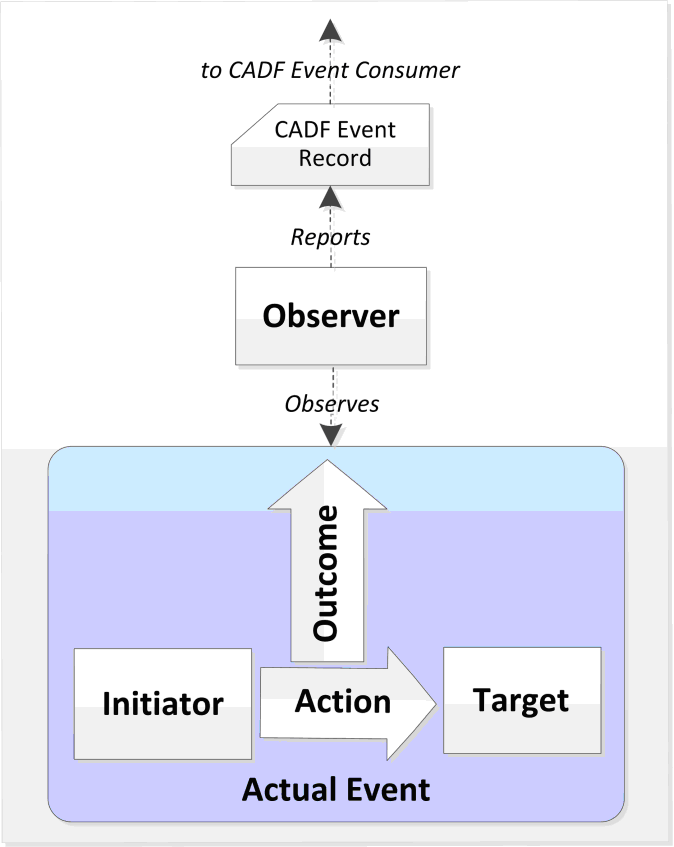
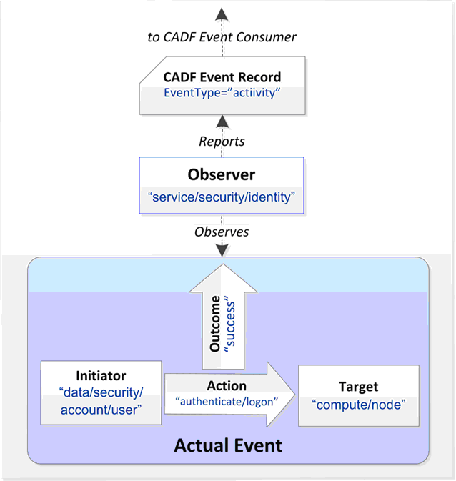
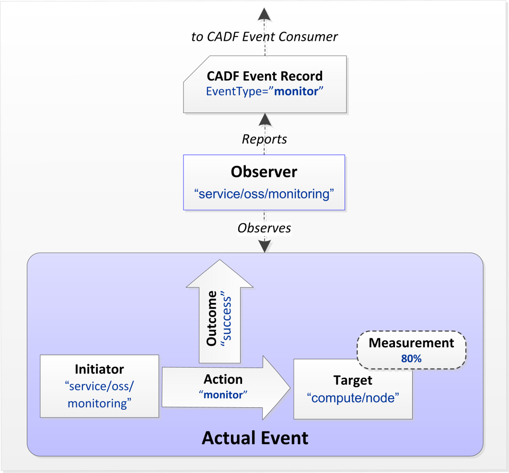

Events¶
The principal goal of this specification is to ensure that similar auditable events, such as a “logon” or “critical resource update” resolve to the same data format with prescriptive data types, entities, and properties to facilitate reporting, query, federation, and aggregation.
Defining Events¶
The event model is intended to describe the interactions between resources that compose a cloud service. Conceptually, the event is based upon the perspective of a single RESOURCE called the OBSERVER that is responsible for observing the Actual Event and creating the (initial) CADF Event Record.


At a minimum, an Event must include the following attributes to be CADF-compliant: eventType, observer, initiator, target, action, and outcome. CADF’s event model is extensible so any additional attributes that may better help describe the event can be added to the event model as an additional attribute.
Note
In some cases, the OBSERVER, INITIATOR, and TARGET could reference the same resource. The precise interpretation of these components, therefore, will depend somewhat on the type of event being recorded, and the specific activity and resources involved.
Use Case Examples¶
Auditing access to a controlled resource
Scenario: A cloud provider has a software component that manages identity and access control that we will call an “identity management service”. This service is required, by the provider’s security policy, to log all user activities including “logon” attempts against any servers within the provider’s infrastructure.


Event Attribute |
Value |
Reason |
|---|---|---|
eventType |
activity |
OBSERVER is required to report any user security activity |
observer.typeURI |
service/security/identity |
Value from the CADF Resource Taxonomy most closely describes an “Identity Manager Service” |
initiator.typeURI |
data/security/account/user |
Value from the CADF Resource Taxonomy most closely describes a “user” |
action |
authenticate/logon |
Value from the CADF Action Taxonomy most closely describes a user “logon” action. |
target.typeURI |
service/compute/node |
Value from the CADF Resource Taxonomy most closely describes a target “server” |
outcome |
success |
Any valid CADF Outcome Taxonomy value that describes result of action |
measurement |
N/A |
A MEASUREMENT component is not required for “activity” type events. |
REASON |
N/A |
A REASON component is not required for “activity” type events. |
Event serialisation (including some optional attributes for additional details):
{
"typeURI": "http://schemas.dmtf.org/cloud/audit/1.0/event",
"eventTime": "2014-02-27T19:29:30.855665+0000",
"target": {
"typeURI": "service/compute/node",
// optional Endpoints to describe compute node,
"addresses": [
{
"url": "http://9.26.26.250:8774/v2/e7e2bcc9c0df4f3eabcd412ae62503f6",
"name": "admin"
},
{
"url": "http://9.26.26.250:8774/v2/e7e2bcc9c0df4f3eabcd412ae62503f6",
"name": "private"
},
{
"url": "http://9.26.26.250:8774/v2/e7e2bcc9c0df4f3eabcd412ae62503f6",
"name": "public"
}
],
"id": "06747855d62547d4bfd707f75b8a1c54",
"name": "nova"
},
"observer": {
"id": "target" // shortform to show Observer Resource is the same as Target,
},
// tags use to query events on,
"tags": [
"correlation_id?value=56cdde6f-6b4e-48a4-94e6-defb40522fb2"
],
"eventType": "activity",
"initiator": {
"typeURI": "data/security/account/user",
"name": "admin",
// optional Credential to describe resource,
"credential": {
"token": "MIIQzgYJKoZIhvcNAQcCoIIQvzCCELsC xxxxxxxx zqvD9OPWZm7VQpYNK2EvrZi-mTvb5A==",
"identity_status": "Confirmed"
},
// optional Host to describe resource,
"host": {
"agent": "python-novaclient",
"address": "9.26.26.250"
},
"project_id": "e7e2bcc9c0df4f3eabcd412ae62503f6",
"id": "68a3f50705a54f799ce94380fc02ed8a"
},
// optional Reason for activity event,
"reason": {
"reasonCode": "200",
"reasonType": "HTTP"
},
// list of Resources which edited event,
"reporterchain": [
{
"reporterTime": "2014-02-27T19:29:31.043902+0000",
"role": "modifier",
"reporter": {
"id": "target"
}
}
],
"action": "authenticate/logon",
"outcome": "success",
"id": "0a196053-95de-48f8-9890-4527b25b5007",
// Event model is extensible so additional attributes may be added to describe model,
"requestPath": "/v2/e7e2bcc9c0df4f3eabcd412ae62503f6/os-certificates"
}
Periodic monitoring resource status
Scenario: A cloud provider has software monitoring agents(Ceilometer) installed on every server(Nova) that it makes available as an IaaS resource to its customers. These agents are required to provide periodic informational status of each server’s CPU utilisation along with metric data to their operations management software by using the CADF Event Record format.


Event Attribute |
Value |
Reason |
|---|---|---|
eventType |
monitor |
OBSERVER is required to monitor a server’s CPU utilization |
observer.typeURI |
service/oss/monitoring |
Value from the CADF Resource Taxonomy most closely describes a “software monitoring agent” |
initiator.typeURI |
service/oss/monitoring |
OBSERVER is also the INITIATOR of this monitoring event |
action |
monitor |
Value from the CADF Action Taxonomy |
target.typeURI |
service/compute/cpu |
Value from the CADF Resource Taxonomy most closely describes a server’s “cpu” |
outcome |
success |
OBSERVER successfully obtained and reported a CPU utilization measurement |
measurement |
80% |
MEASUREMENT component is required and the observed value is 80% CPU utilisation |
reason |
N/A |
REASON component is not required for “monitor” type events. |
Event serialisation:
{
"typeURI": "http://schemas.dmtf.org/cloud/audit/1.0/event",
"eventTime": "2014-02-27T19:29:30.855665+0000",
"target": {
"typeURI": "service/compute/cpu",
"id": "06747855d62547d4bfd707f75b8a1c54",
"name": "instance"
},
"observer": {
"id": "initiator"
},
"eventType": "monitor",
"initiator": {
"typeURI": "service/oss/monitoring",
"name": "ceilometer-pollster",
"id": "68a3f50705a54f799ce94380fc02ed8a"
},
"measurement": [
{
"result": "80",
"metric": {
"metricId": "<metric_id>",
"unit": "%",
"name": "CPU utilisation metric"
}
}
],
"action": "monitor",
"outcome": "success",
"id": "0a196053-95de-48f8-9890-4527b25b5007"
}
Note
Additional use cases can be found in the Full CADF specification.